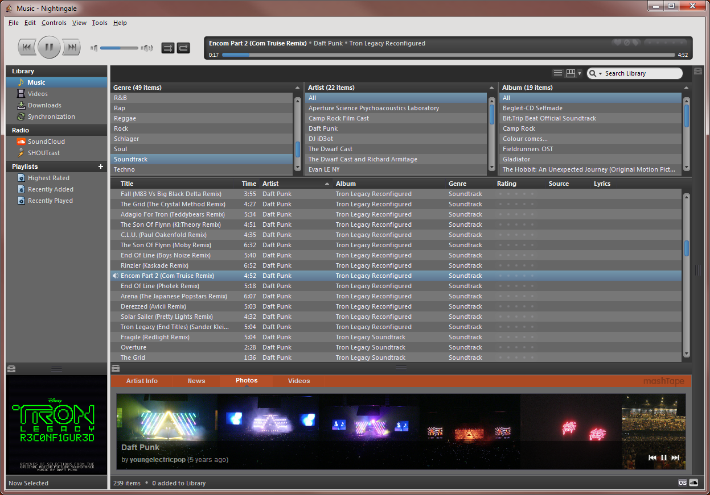

Your browser doesn't support the features required by impress.js, so you are presented with a simplified version of this presentation.
For the best experience please use the latest Chrome, Safari or Firefox browser.
Welcome!
Antione Turmel
- GeekShadow
- France
- whatevs
Martin Giger
- freaktechnik
- Switzerland
- Student
- Frontend-/Webdeveloper
Matt Parnell (ilikenwf)
Dirk Steinmetz (rsjtdrjgfuzkfg)
John Murray (johnmurrayvi)
Janek Bevendorff (Manko10)
What is Nightingale?
- Fork of the recently terminated Songbird

Problems:
Development Process
Anarchy.
Problems with the do-what-you-want system:
- Some bugs never get fixed
Organization
First pull request approoved → push rights
Websites dependent on a few people
Q&A